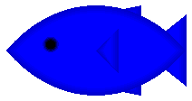

4 图形绘制调整器
procedure
pict : pict-convertible? factor : real? (scale pict w-factor h-factor) → pict? pict : pict-convertible? w-factor : real? h-factor : real?
在绘制原始 pict 的同时,通过调整目标 dc<%> 的比例来缩放绘图。
> (filled-rectangle 40 40)
> (scale (filled-rectangle 40 40) 1.5) > (scale (filled-rectangle 40 40) 2 1.5)
procedure
pict : pict-convertible? (flip-y pict) → pict? pict : pict-convertible?
> (standard-fish 100 50) 
> (flip-x (standard-fish 100 50)) > (flip-x (flip-x (standard-fish 100 50)))
> (flip-y (standard-fish 100 50)) > (flip-y (flip-y (standard-fish 100 50)))
> (flip-y (flip-x (standard-fish 100 50)))
> (flip-x (flip-y (standard-fish 100 50)))


procedure
(scale-to-fit pict size-pict [#:mode mode]) → pict?
pict : pict-convertible? size-pict : pict-convertible?
mode :
(or/c 'preserve 'inset 'preserve/max 'inset/max 'distort) = 'preserve (scale-to-fit pict width height [#:mode mode]) → pict? pict : pict-convertible? width : real? height : real?
mode :
(or/c 'preserve 'inset 'preserve/max 'inset/max 'distort) = 'preserve
如果 mode 是 'preserve 或 'preserve/max, 宽度和高度将以相同的系数缩放,因此 pict 的长宽比将被保留。 如果 mode 是 'preserve , 结果的边界框不会大于 width 乘以 height ,但可能会更小。 当 mode 为 'preserve/max 时,情况正好相反;包围盒不会变小,但可能会变大。
如果 mode 是 'inset 或 'inset/max, 长宽比会像 'preserve 和 'preserve/max 那样被保留, 但生成的图片会以一个正好是 width 乘以 height 的边界框为中心。
如果 mode 是 'distort, 宽度和高度将被分别缩放。
> (define rect (colorize (filled-rectangle 40 40) "olive")) > rect
> (scale-to-fit rect (disk 60))
> (scale-to-fit rect 80 30 #:mode 'preserve) > (frame (scale-to-fit rect 80 30 #:mode 'inset))
> (scale-to-fit rect 80 30 #:mode 'preserve/max)
> (cc-superimpose (blank 100 100) (frame (scale-to-fit rect 80 30 #:mode 'inset/max)))
> (scale-to-fit rect 80 30 #:mode 'distort)


Changed in version 1.4 of package pict-lib: 增加 #:mode 参数。
procedure
pict : pict-convertible? theta : real?
结果图画的 bounding box 是包围 pict 的旋转角的框 (这会使边界框的面积膨胀,除非 theta 是 pi 的一半的倍数)。 结果边界框的上升线和下降线是将旋转的原线一分为二的水平线;如果上升线低于下降线,这两条线就会翻转。
> (rotate (colorize (filled-rectangle 30 30) "chartreuse") (/ pi 3))
> (explain (rotate tt 0))
> (explain (rotate tt (/ pi 2))) > (explain (rotate tt pi))


procedure
pict : pict-convertible? x-shear : number? y-shear : number?
> (define sqr (colorize (filled-rectangle 40 20 #:draw-border? #t #:color "purple") "black")) > (shear sqr 0 0.3) > (shear sqr -0.5 0) > (shear sqr -0.5 0.3)
Added in version 1.8 of package pict-lib.
procedure
pict : pict-convertible? dx : real? dy : real? bb? : any/c = #f
> (explain (translate tt -3 -3)) > (explain (translate tt -3 -3 #:extend-bb? #t)) > (explain (translate tt 3 3)) > (explain (translate tt 3 3 #:extend-bb? #t))
Added in version 1.10 of package pict-lib.
procedure
pict : pict-convertible?
procedure
w : (or/c real? #f) pict : pict-convertible?
procedure
style :
(or/c 'transparent 'solid 'xor 'hilite 'dot 'long-dash 'short-dash 'dot-dash 'xor-dot 'xor-long-dash 'xor-short-dash 'xor-dot-dash) pict : pict-convertible?
> (define styles '(transparent solid xor hilite dot long-dash short-dash dot-dash xor-dot xor-long-dash xor-short-dash xor-dot-dash))
> (apply ht-append 10 (for/list ([style (in-list styles)]) (vc-append 5 (text (symbol->string style)) (linewidth 3 (linestyle style (hline 40 1))))))
procedure
pict : pict-convertible?
color :
(or/c string? (is-a?/c color%) (list/c byte? byte? byte?))
> (colorize (disk 40) "lavender")
> (colorize (filled-rectangle 40 40) (list 255 153 85))
> (colorize (arrow 40 0) (make-color 170 180 120))
procedure
(cellophane pict opacity) → pict?
pict : pict-convertible? opacity : (real-in 0 1)
> (cc-superimpose (filled-rectangle 70 45 #:color "darkcyan") (cellophane (disk 40) 0.2))
> (cc-superimpose (filled-rectangle 70 45 #:color "darkcyan") (cellophane (disk 40) 0.8))
procedure
(clip pict) → pict
pict : pict-convertible?
> (define shape (inset (colorize (filled-rectangle 40 40) "thistle") -10)) > shape > (clip shape)
procedure
(inset/clip pict amt) → pict?
pict : pict-convertible? amt : real? (inset/clip pict h-amt v-amt) → pict? pict : pict-convertible? h-amt : real? v-amt : real? (inset/clip pict l-amt t-amt r-amt b-amt) → pict? pict : pict-convertible? l-amt : real? t-amt : real? r-amt : real? b-amt : real?
> (filled-rectangle 40 40 #:color "forestgreen") > (inset/clip (filled-rectangle 40 40 #:color "forestgreen") -10)
> (inset/clip (filled-rectangle 40 40 #:color "forestgreen") -10 -5)
> (inset/clip (filled-rectangle 40 40 #:color "forestgreen") -2 -4 -8 -16)
syntax
(scale/improve-new-text pict-expr scale-expr)
(scale/improve-new-text pict-expr x-scale-expr y-scale-expr)
> (text "Hello World" null 25) > (scale/improve-new-text (text "Hello World" null 25) 2) > (scale (text "Hello World" null 25) 2)

parameter
(black-and-white on?) → void? on? : any/c
> (colorize (disk 40) "seagreen")
> (parameterize ([black-and-white #t]) (colorize (disk 40) "seagreen"))
procedure
(freeze pict [ #:scale scale-amount #:inset inset-amount]) → pict? pict : pict-convertible? scale-amount : real? = 1
inset-amount :
(or/c real? (list/c real?) (list/c real? real?) (list/c real? real? real? real?)) = 0
这样做的效果是加快了 pict 的后续绘制速度,同时也将其裁剪到其边界框内。 pict 的任何子图在新的 pict 中保持原样。
scale-amount 参数控制用于渲染pict的位图的大小。 例如,如果 scale-amount 是 2, 那么就会使用比 pict 宽两倍、高两倍的位图来绘制。 不管 scale-amount 的值是多少,结果 pict 的大小都与 pict 的大小相同。
inset-amount 参数允许 freeze 保存更多 pict 绘制的区域, 当 pict 在其边界框外绘制时,这很有用。 这些值被用作 inset 的参数。 与 scale-amount 参数一样,生成的 pict 的大小与输入 pict 的大小相同;这个参数控制位图的大小。
> (define txt (colorize (text "Freeze!" null 25) "deepskyblue")) > (scale txt 2.5) > (scale (freeze txt) 2.5)
Changed in version 1.13 of package pict-lib: 增加了 scale 和 inset 参数。